Six coups repris selon tes verdicts. Gauche : la version que tu avais vue (page remplacements). Droite : la nouvelle, GIF du vrai moteur en temps réel. Même case de l'arbre, mêmes images (départ / actif / recuperation), mêmes dégâts. Valide ou renvoie avec un commentaire.
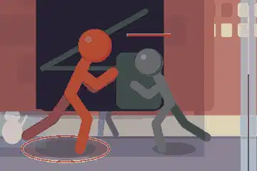
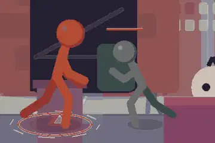
Correctif : Cause : Gorr gardait le visage vers l'adversaire mais lancait la jambe DERRIÈRE lui. Il pivote maintenant dos tourne, se penche, mains posees devant, et la jambe part vers l'adversaire : le pied touche, l'adversaire tombe.
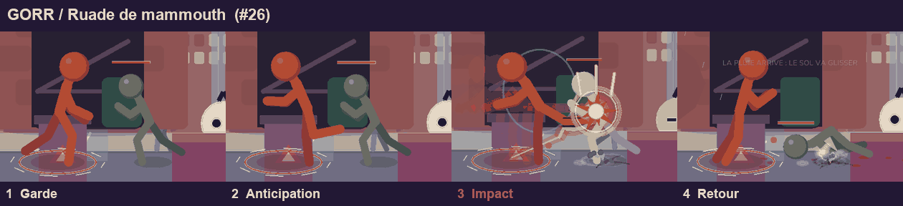
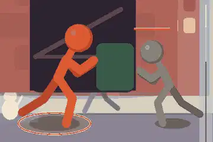
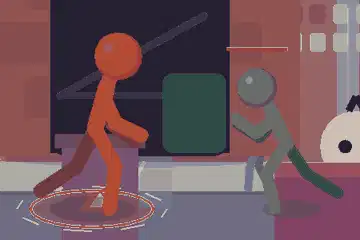
Correctif : Le corps avance avec le coup (le pas ajoute au geste n'existait pas dans la refonte) : mains du clinch tendues devant, le genou arrive dans la hitbox au sommet.
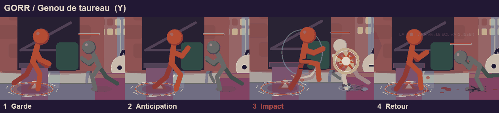
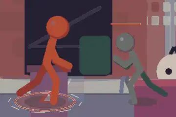
Correctif : Retour a l'ancien geste (la refonte reste en réserve comme modèle, plus jouee).
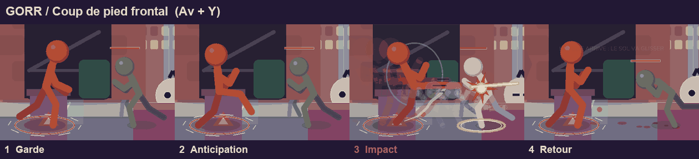
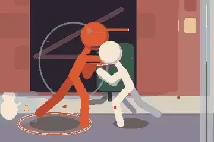
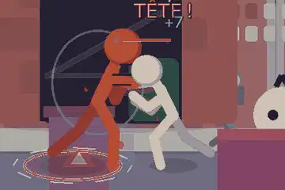
Correctif : Accroupi plus profond, poing arme bas, puis detente : petit saut franc (decollage 0,16 taille), les DEUX bras montent (double uppercut), pose d'impact tenue sur les images actives.
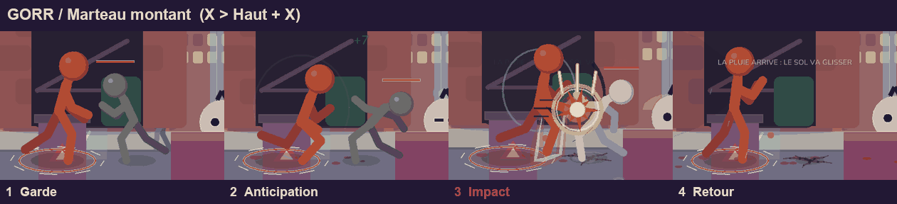
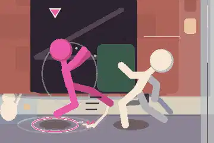
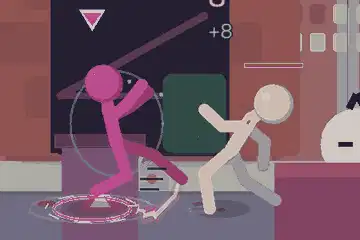
Correctif : Geste conserve ; coup renomme « Pomme rotative » (ex « Paume rotative »).
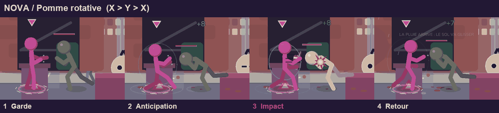
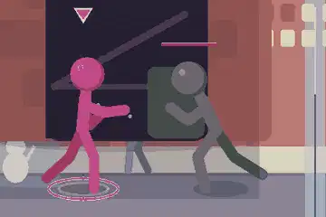
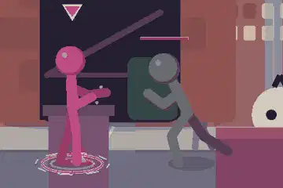
Correctif : Cause : les deux bras montaient en parallele, sans contact. Paume montante : accroupi, la main basse part de sous la hanche, le corps decolle avec elle ; l'adversaire est soulève PAR la paume.
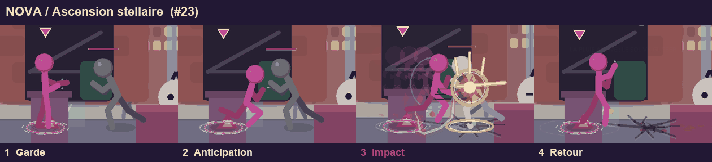